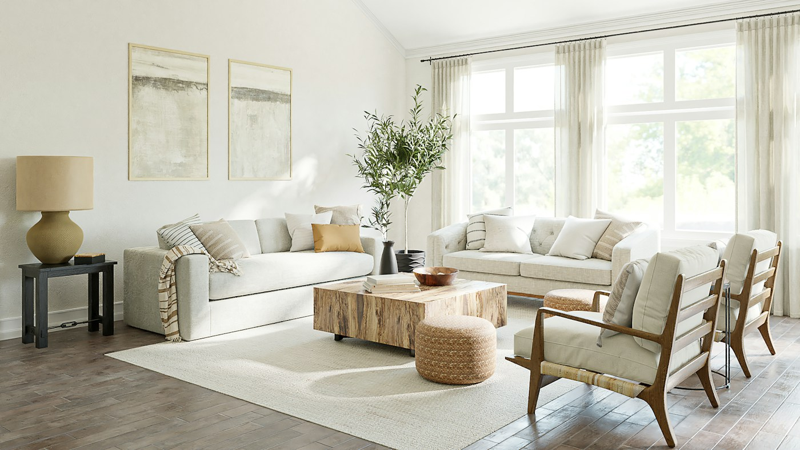
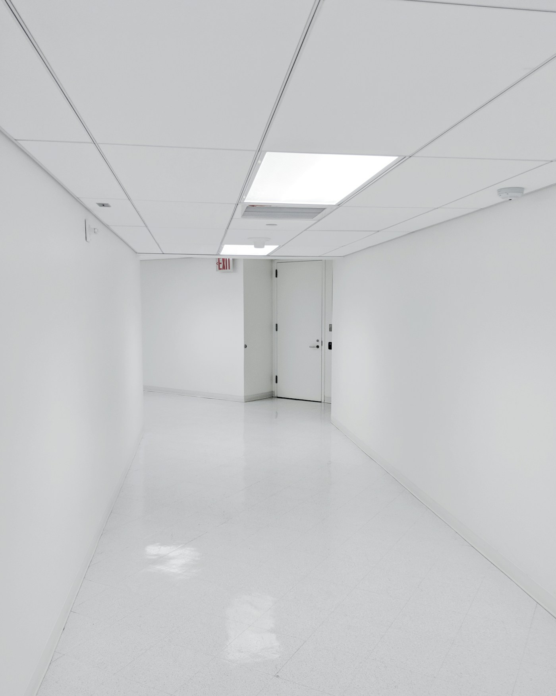
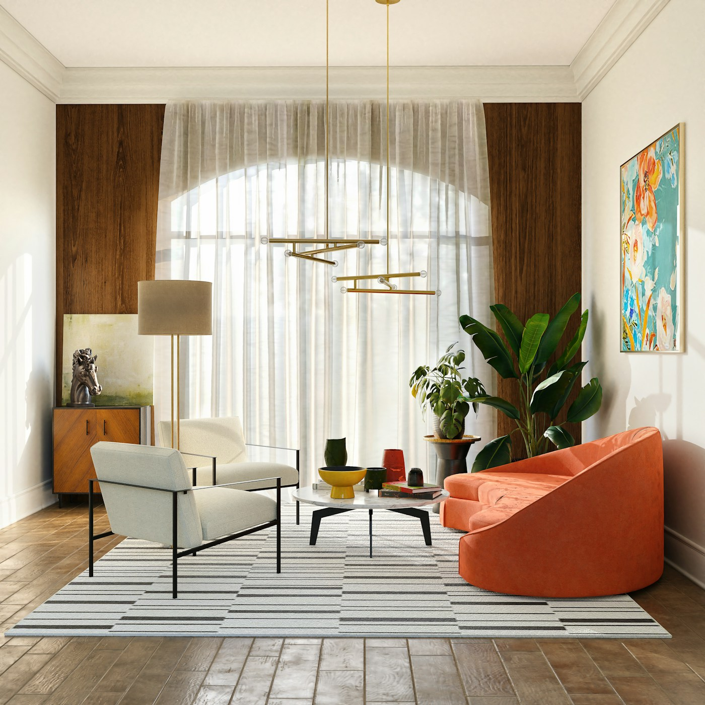
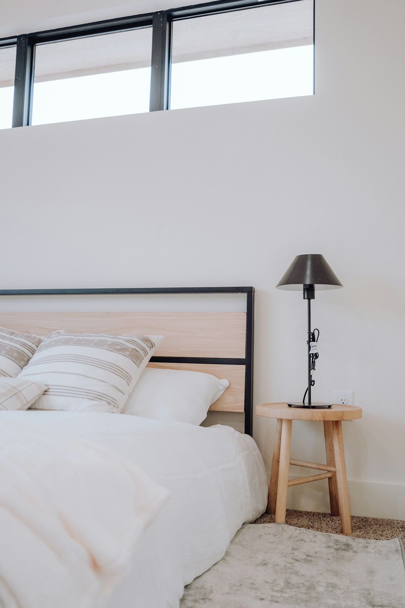
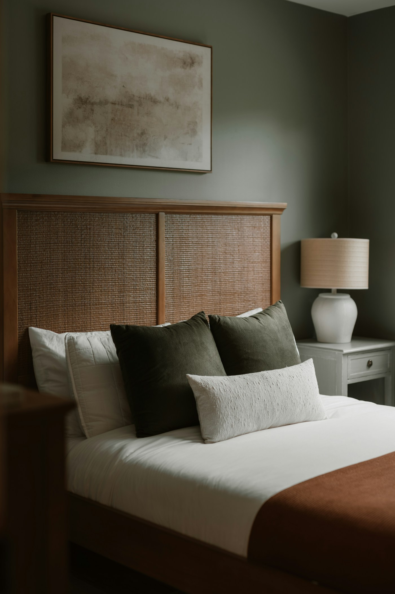

01 — Sense
気配を読む
人の存在や動き、環境の変化を、生活を邪魔しない方法で捉える。
Philosophy
Intelligence should disappear.
LUMAは、AIセンサと調光・調色照明を空間体験として統合するデザイン研究です。 新しい機器を開発するのではなく、既存または実現可能な技術を選び、 人の行動と光の変化が自然につながる「場面の論理」を設計します。
01 — Sense
人の存在や動き、環境の変化を、生活を邪魔しない方法で捉える。
02 — Understand
朝から夜まで、行動とサーカディアンリズムに合う光を組み立てる。
03 — Respond
必要な場所へ、必要な明るさと色を届け、安全と心地よさを両立する。
From philosophy to a place
光を通して、人と空間の関係をデザインする。

REFERENCE IMAGE · 現地写真に差し替え予定01 / Lighting overview
日中と夜間を切り替え、光の役割を俯瞰する。気になる場所を選ぶと、各空間の検討ポイントをご覧いただけます。
空間構成・家具・照明配置は説明用の仮図です。施設の実際の平面・規模とは異なり、照度計算を示すものではありません。
02 / Observe & redesign
現状を記録し、課題を整理し、提案を可視化する。同じ空間を見比べながら、照明を変える意図を伝えます。
制作途中のプレビュー 以下の写真はすべてレイアウト確認用の参考画像です。現状の記録や提案のCGではありません。検討項目も仮設定で、現地調査後に更新します。
01 / Corridor
居室から共用空間へ。移動する人の視線と進行方向に沿って、光の連続性を考えます。

BEFORE / 現状写真の掲載位置参考写真・仮画像Observation checklist / 仮設定
Design direction / 検討案
低位照明で進行方向を示し、通過後はゆっくり減光する。上方の明るさを抑えながら、動線に必要な光を残す構成を検討します。
02 / Shared living
食事、会話、ひと休み。ひとつの場所に重なる行動を、面の明るさと居場所の光で支えます。

BEFORE / 現状写真の掲載位置参考写真・仮画像Observation checklist / 仮設定
Design direction / 検討案
天井・壁面のやわらかな光に、テーブルや座席まわりの光を重ねる。時間帯に合わせて空間の雰囲気を切り替える提案です。
03 / Private room
起床から就寝、夜間の小さな移動まで。個人の過ごし方に合わせて、主照明と手元の光を分けて考えます。

BEFORE / 現状写真の掲載位置参考写真・仮画像
PROPOSAL / 3D提案の掲載位置参考写真・CG差し替え予定Observation checklist / 仮設定
Design direction / 検討案
主照明を穏やかに落とし、手元と足元に暖かな光を残す。休息中と移動時を分け、必要な範囲へ応答する構成を検討します。
One place, connected experiences
廊下と居室の光をつなぎ、行き先をわかりやすくする。
会話や食事の場に、活動を支える光の層を重ねる。
一日の時間と使い方に応じて、必要な場所に光を残す。
Light Timeline
One day, four atmospheres
AI照明の考え方を、専門知識がなくても伝わる形に。 時間を選ぶと、光の色・明るさ・役割が連動して変化します。
目覚めの光
LIGHTING INTENT
暖かな低照度から始まり、覚醒を促す白い光へ段階的に移行します。
色温度・調光率は概念説明用の設定例です。実測照度や効果の検証値ではありません。
System Framework
From signal to experience
室内デザイナーの役割は、機器をつくることではありません。 空間・行動・光の関係を整理し、既存製品を体験として結びつけることです。
Sense
Interpret
Illuminate
Communicate
Example / 夜間の移動
離床と暗さを検知 → 夜間の移動と判断 → 進む先の足元を点灯
現在は事前設定したルールを表す概念デモです。実際のAI判定・センサ接続は実装していません。Reactive scene
下の場面を選ぶと、センサが捉える情報と照明の応答を短い物語として確認できます。
照明応答のイメージ · 時間を短縮した概念アニメーション
SENSOR READS
ベッド付近の離床と進行方向LIGHT RESPONDS
足元から目的地まで低い光で誘導Presentation, not control
このウェブサイトは照明を操作する制御画面ではなく、 時間軸とセンサ反応を直感的に説明するコミュニケーションツールです。 運営者、介護職員、家族が同じイメージを共有できることを目指します。
タイムラインをもう一度見るAI × LIGHTING × INTERIOR